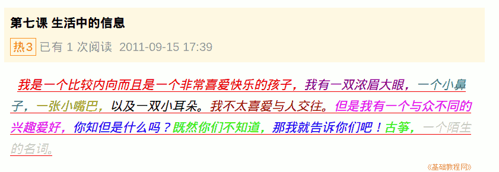

2011-2012 第一学期七年级电脑操作基础教学课程设计
作者：TeliuTe 来源：基础教程网
七、生活中的信息 返回目录 下一课学习目标：实践练习下，获取和表达信息；
注意事项：要求写出具体的内容来；
1、生活中的信息
1）写一篇跟信息有关的小短文；
2）喜欢的人或事，喜欢哪些方面，也可以写自己；
3）外在的相貌方面，内在的言行举止；

课后记 2011-9-15 18:27：
把信息小结一下，写一篇小短文本节学习了生活中的信息的基础知识，如果你成功地完成了练习，请继续学习下一课内容；
本教程由86团学校TeliuTe制作|著作权所有
基础教程网：http://teliute.org/
美丽的校园……
转载和引用本站内容，请保留版权信息和本站链接。